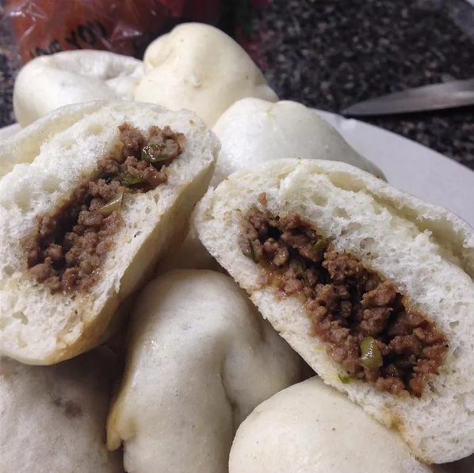

Chinese Steamed Buns

Description
Chinese dim sum made with or without meat filling.
Ingredients
- 1 3/4 cups all-purpose flour, divided
- 3/4 cup warm water, divided
- 1 tablespoon active dry yeast
- 1 teaspoon white sugar
- 2 tablespoons white sugar
- 1 tablespoon vegetable oil
- 1/4 teaspoon salt
- 1/2 teaspoon baking powder
Instructions
- Mix together 1/4 cup flour, 1/4 cup warm water, yeast, and 1 teaspoon sugar in a large bowl. Allow to sit for 30 minutes.
- Mix in remaining 1 1/2 cups flour, remaining 1/2 cup warm water, 2 tablespoons sugar, vegetable oil, and salt. Knead until dough is msooth and elastic. Transfer to a greased bowl, roll to coat with oil, and let sit until tripled in size, 2 1/2 to 3 hours
- Punch down dough and spread out on a floured board. Sprinkle baking powder evenly on surface of dough; knead for 5 minutes.
- Divide dough in half; set aside one half in a covered bowl. Divide remaining half into 12 equal pieces. Shape each into a ball; transfer each ball to a small square of waxed paper with the smooth surface facing up. Repeat portioning and shaping with remaining dough half. Cover all 24 doough balls and let sit until doubled in size, about 30 minutes.
- Bring some water to a boil in a wok, then reduce heat to medium and keep water at a low boil. Place the steam plate on a small wire rack in the middle of the wok, leaving at least 2 inches of space between the plate and the wok. Working in batches, place buns on waxed paper squares onto the steam plate, leaving 1 to 2 inches between buns.
- Cover and steam buns for 15 minutes. Carefully remove the lid, so condensation doesn't drip onto buns. Continue steaming remaining buns until all are cooked.